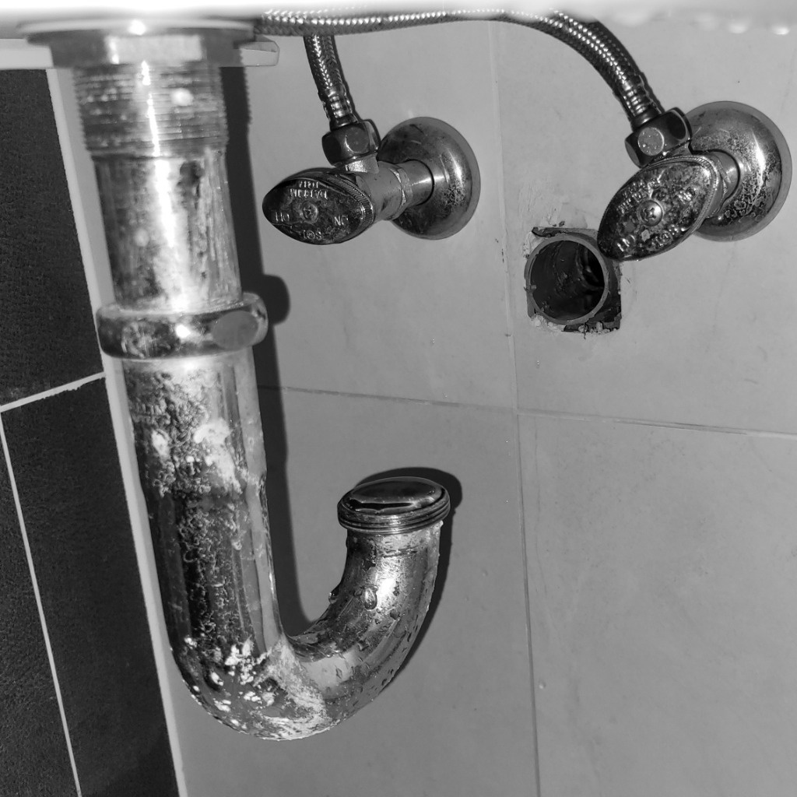
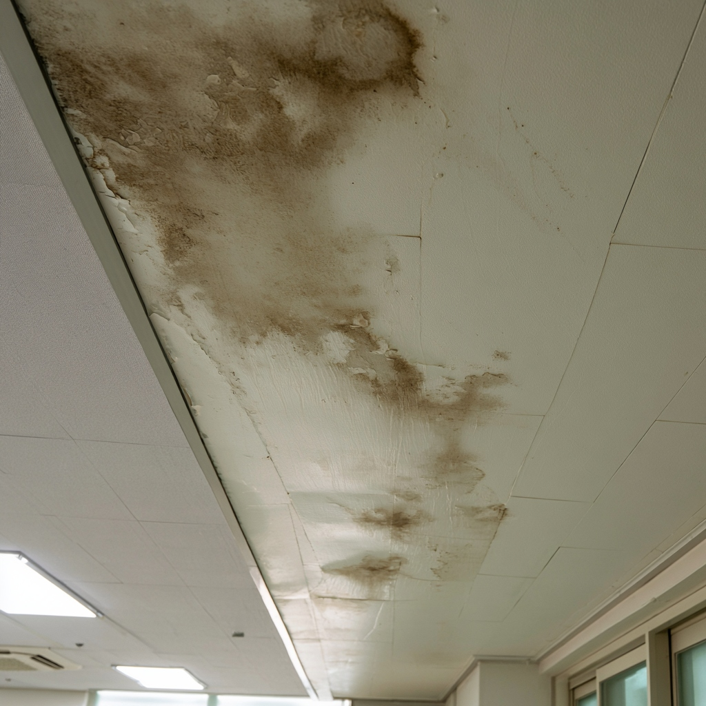
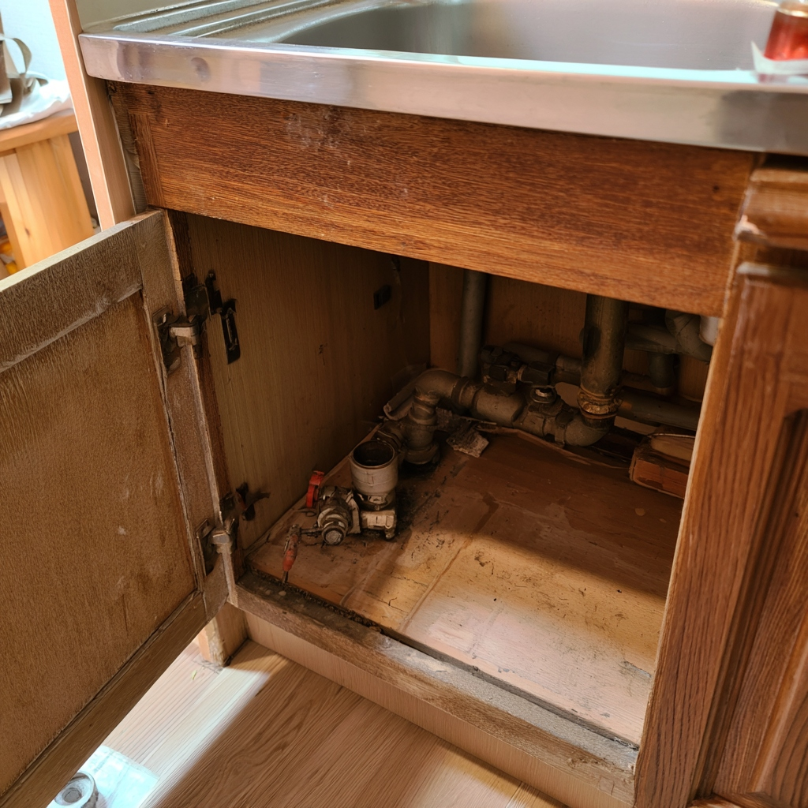

최첨단 탐지 장비를 활용하여 미세한 누수 지점까지 정확하게 찾아내고 재발 없는 완벽한 시공을 보장합니다.

벽체 및 바닥 매립 배관의 노후화로 인한 누수를 정밀 진단하고 손상 부위 보수 및 배관 교체 공사를 진행합니다.
분배기 및 바닥 난방 배관의 누수를 신속하게 탐색하여 불필요한 열 손실을 방지하고 난방 기능을 회복합니다.
욕실, 베란다 등의 하수구 배관 균열이나 유가 주변 방수층 손상으로 아래층 천장에 번지는 누수를 차단합니다.
양변기, 세면대, 바닥 방수층 손상 및 배수 배관 이상으로 발생하는 누수를 정밀 진단하여 완벽히 방수 시공합니다.

위층 배관 누수나 결로, 방수층 결함으로 천장에 번지는 물 번짐과 곰팡이 피해를 원인부터 확실하게 해결합니다.
우수관 주변 방수 불량, 창틀 크랙, 외벽 틈새로 유입되는 빗물 누수를 전문 장비로 추적하여 차단합니다.

싱크대 하부 급수·온수 배관, 주름관 연결 부위 및 하수관 역류로 인한 바닥 스며듦 누수를 신속하게 보수합니다.